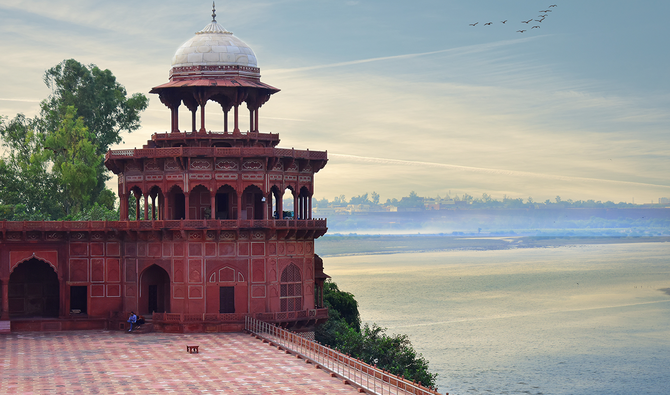

The city of Taj Mahal, the monument of eternal love

Agra is a city on the banks of the Yamuna river in the Agra district of the Indian state of Uttar Pradesh.[10] It is 206 kilometres (128 mi) south of the national capital New Delhi. Agra is the fourth-most populous city in Uttar Pradesh and 24th in India. Sikandar Lodi was the first ruler of the Delhi Sultanate to move his capital from Delhi to Agra in 1504, and so he is regarded as being the founder of Agra. Sikandar Lodi's son, Ibrahim Lodi, was defeated at the Battle of Panipat in 1526 by Babur, which marked the beginning of Mughal Empire. In a brief interruption in Mughal rule between 1540 and 1556, Sher Shah Suri, established the short lived Sur Empire. Agra was the capital of the Mughal Empire from 1556 to 1648, under the Mughal Emperors Akbar, Jahangir and Shah Jahan, after which Shah Jahan shifted the capital to Delhi. The Mughal Empire saw the building of many monuments, especially Taj Mahal. The city was later taken by the Jats and then Marathas and later still fell to the British Raj. Agra is a major tourist destination because of its many Mughal-era buildings, most notably the Taj Mahal, Agra Fort and Fatehpur Sikri, all of which are UNESCO World Heritage Sites. Agra is included on the Golden Triangle tourist circuit, along with Delhi and Jaipur; and the Uttar Pradesh Heritage Arc, a tourist circuit of Uttar Pradesh, along with Lucknow and Varanasi. Agra is in the Braj cultural region..
Attractions
- 1.Taj Mahal The mausoleum of Shah Jahan's favourite wife, Mumtaz Mahal, Taj Mahal is one of the New Seven Wonders of the world, and one of the three World Heritage Sites in Agra. The Taj Mahal is the most visited tourist spot in the India, attracting nearly 6.9 million visitors in 2018–19. The Taj Mahal is distinguished as the finest example of Mughal architecture, a blend of Indian, Persian, and Islamic styles. Agra is commonly identified as the "City of Taj". Completed in 1653, the Taj Mahal was built by the Mughal emperor Shah Jahan as the final resting place for his favourite wife, Mumtaz Mahal. Finished in marble, it is one of India's many beautiful monuments and is set amidst landscaped gardens. Designed by the Persian architect, Ustad Ahmad Lahori, the Taj Mahal is on the south bank of the Yamuna River. It can be observed from Agra Fort from where Emperor Shah Jahan gazed at it for the last eight years of his life, a prisoner of his son Aurangzeb. Verses of the Quran are inscribed on it and at the top of the gate are 22 small domes, signifying the number of years the monument took to build. The Taj Mahal was built on a marble platform that stands above a sandstone one. The most elegant and largest dome of the Taj Mahal has a diameter of 60 feet (18 m), and has a height of 80 feet (24 m); directly under this dome is the tomb of Mumtaz Mahal. Shah Jahan's tomb was erected next to hers by his son Aurangzeb. The interiors are decorated with fine Pietra dura inlay work, incorporating semi-precious stones. However, air pollution caused by emissions from foundries and other nearby factories and exhaust from motor vehicles has damaged the Taj, notably its marble facade. A number of measures have been taken to reduce the threat to the monument, among them the closing of some foundries and the installation of pollution-control equipment at others, the creation of a parkland buffer zone around the complex, and the banning of nearby vehicular traffic, and more recently, use of 'mud pack' therapy.[128] Perhaps most importantly, the 10,400 km2 (4,000 sq mi) Taj Trapezium Zone has been created around the Taj Mahal and other nearby monuments where strict pollution restrictions are in place on industries, following a 1996 Supreme Court of India ruling.
- 2.Agra Fort Agra Fort (sometimes called the Red Fort), was commissioned by the conquering Mughal Emperor Akbar the Great in 1565, and is another of Agra's World Heritage Sites. A stone tablet at the gate of the Fort states that it had been built before 1000 but was later renovated by Akbar. The red sandstone fort was converted into a palace during Shah Jahan's reign, and reworked extensively with marble and pietra dura inlay. Notable buildings in the fort include the Pearl Mosque or Moti Masjid, the Diwan-i-Am and Diwan-i-Khas (halls of public and private audience), Jahangir's Palace, Khas Mahal, Shish Mahal (mirrored palace), and the Musamman Burj.[130] The forbidding exteriors of this fort conceal an inner paradise. The fort is crescent-shaped, flattened on the east with a long, nearly straight wall facing the river. It has a total perimeter of 2.4 kilometres (1.5 mi), and is ringed by double castellated ramparts of red sandstone punctuated at regular intervals by bastions. A moat 9 metres (30 ft) wide and 10 metres (33 ft) deep surrounds the outer wall. Shivaji visited the Agra Fort, as a result of the conditions of the Treaty of Purandar entered into with Mirzā Rājā Jaisingh to meet Aurangzeb in the Diwan-i-Khas (Special Audience Chamber). In the audience, he was deliberately placed behind men of lower rank. An insulted Shivaji stormed out of the imperial audience and was confined to Jai Sing's quarters on 12 May 1666. Fearing the dungeons and execution he escaped on 17–19 August 1666. The fort is a typical example of Mughal architecture, effectively showing how the North Indian style of fort construction differed from that of the South. In the South, the majority of forts were built on the seabed like the one at Bekal in Kerala
- 3.Itmad-Ud-Daulah's Tomb The Empress Nur Jahan built Itmad-Ud-Daulah's Tomb, sometimes called the "Baby Taj", for her father, Mirza Ghiyas Beg, the Chief Minister of the Emperor Jahangir. Located on the left bank of the Yamuna river, the mausoleum is set in a large cruciform garden, criss-crossed by water courses and walkways. The area of the mausoleum itself is about 23 m2 (250 sq ft), and is built on a base that is about 50 m2 (540 sq ft) and about one metre (3.3 feet) high. On each corner are hexagonal towers, about thirteen metres (43 feet) tall. Small in comparison to many other Mughal-era tombs, it is sometimes described as a jewel box. Its garden layout and use of white marble, pietra dura, inlay designs and latticework presage many elements of the Taj Mahal. The walls are white marble from Rajasthan encrusted with semi-precious stone decorations – cornelian, jasper, lapis lazuli, onyx, and topaz in images of cypress trees and wine bottles, or more elaborate decorations like cut fruit or vases containing bouquets. Light penetrates to the interior through delicate Jali screens of intricately carved white marble. Many of Nur Jahan's relatives are interred in the mausoleum. The only asymmetrical element of the entire complex are the tombs of her father and mother, which have been set side-by-side, a formation replicated in the Taj Mahal
- 4.Akbar's Tomb, Sikandra Sikandra, the last resting place of the Mughal Emperor Akbar the Great, is on the Delhi-Agra Highway, about 13 kilometres (8.1 miles) from the Agra Fort. The four-storied tomb combines both marble and sandstone in its exterior. The construction of Sikandra was commenced in Akbar's reign, and was completed by his heir and son Jahangir in 1613. The tomb with is set amidst a large garden, and is enclosed by four battlemented walls, each with a large gateway. The 99 names of Allah have been inscribed on the tomb. The tomb has seen some damage to its minarets and other aspects, which was inflicted by the Jats of Bharatpur. The vast gardens around Sikandra are inhabited by several Blackbucks, which are in the process of being shifted to the Etawah Safari Park